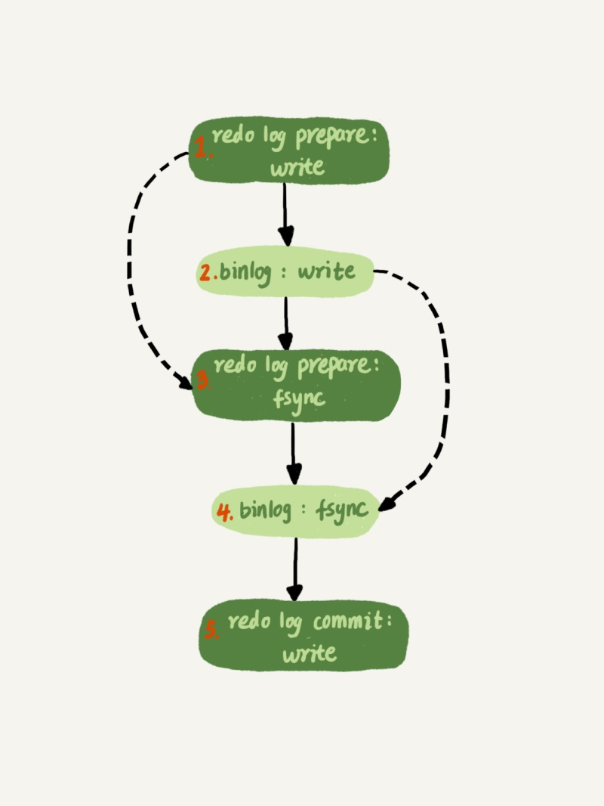

面试汇总-数据库
1. 索引失效的几种场景
- 使用了函数, 或者计算.
- 前缀模糊查询， 即 like %**
- 数据类型不一致问题。 即查询的类型和数据库定义的字段类型不一致
- 使用了非等值查询。
- 没有匹配上最左匹配原则
- 使用了or查询
2. 什么是两阶段提交
- 写入redo log, redo log 处于prepare状态
- 写入binlog
- redo log处于commit状态
2.1 为什么需要两阶段提交
保证用binlog恢复回来的库(从库, 备份库)与用redo log恢复的库的数据一致.
假如先写redo log , 再写binlog, 那么中间宕机会导致binlog恢复出来的库数据少.
假如先写binlog, 在写redo log, 那么中间宕机会导致redo log 恢复出来的库数据少.
2.2 能不能只用redo log
不能, 因为binlog提供归档/下游消费/主从同步等功能.
2.3 能不能只用binlog
不能, 因为redo log 仅记录了未写入磁盘的数据. binlog 记录的是所有的数据.
3. redolog/binlog/undolog
redolog: 确保事务的持久性。防止在发生故障的时间点，尚有脏页未写入磁盘，在重启mysql服务的时候，根据redo log进行重做，从而达到事务的持久性这一特性。binlog: 用于复制，在主从复制中，从库利用主库上的binlog进行重播，实现主从同步。用于数据库的基于时间点的还原。undolog: 每条记录在更新的时候都会同时记录一条回滚操作。记录上的最新值，通过回滚操作，都可以得到前一个状态的值。- 什么时候删除: 当没有事务比这个回滚日志更早的read-view时
4. 什么是多版本并发控制, 怎么实现.
同一条记录在系统中存在不同版本的值.
4.1 事务的一致性视图
InnoDB 里面每个事务有一个唯一的事务 ID，叫作 transaction id。它是在事务开始的时候向 InnoDB 的事务系统申请的，是按申请顺序严格递增的。
每条数据存在多个版本(undolog), 每个版本会记录更新该版本的事务ID: row_trx_id
InnoDB 为每个事务构造了一个数组，用来保存这个事务启动瞬间，当前正在“活跃”的所有事务 ID。“活跃”指的就是，启动了但还没提交。
数组里面事务 ID 的最小值记为低水位，当前系统里面已经创建过的事务 ID 的最大值加 1 记为高水位。
这个视图数组和高水位，就组成了当前事务的一致性视图（read-view）。
如果事务ID大于高水平, 那么一定不可见
如果事务ID小于低水平, 那么一定可见
如果事务ID在高水平和低水平之间, 且该事务ID在数组里面, 说明不可见, 否则可见.
5. 为什么会出现主备延迟
- 备库的性能比主库差
- 备库的压力大, 读操作更多
- 大事务
- 并行复制: 之前备库都是单线程消费binlog.
6. 能不能用连表查询
- 如果可以使用被驱动表的索引, 那么可以使用join查询
- 不能使用被驱动表的索引，只能使用 Block Nested-Loop Join 算法，这样的语句就尽量不要使用；
- 在使用 join 的时候，应该让小表做驱动表。
7. 数据库隔离级别 && 可重复读解决了什么问题
- 读未提交： 所有事务都可以看到其他未提交事务的执行结果，脏读
- 读提交： 事务提交后， 执行结果才能被其他事务看到，不可重复读
- 可重复读： 一个事务在执行过程中多次读取的结果是一样的。
- 串行化： 所有事务串行执行。
可重复读解决了同一事务中， 两次select读取结果不一致的问题， 使用多版本并发控制解决这种问题。
8. 幻读
- 在可重复读隔离级别下, 普通的查询是快照读, 是不会看到别的事务插入的数据的. 因此幻读在’当前读’下才会出现
- 幻读指的是一个事务在前后两次查询同一个范围的时候，后一次查询看到了前一次查询没有看到的行。幻读专指新插入的行.
当前读： 读取的数据库记录是最新的， 并且加上锁保证数据不会被其他事务修改
使用next-lock-key， 解决幻读的问题。
8.1 next-key lock
间隙锁和行锁共同构成next-key lock
- 原则1：加锁的基本单位是 next-key lock。next-key lock 是前开后闭区间。
- 原则2：查找过程中访问到的对象才会加锁。
- 优化1：索引上的等值查询，给唯一索引加锁的时候，next-key lock 退化为行锁。
- 优化2：索引上的等值查询，向右遍历时且最后一个值不满足等值条件的时候，next-key lock 退化为间隙锁。
- 一个 bug：唯一索引上的范围查询会访问到不满足条件的第一个值为止。
9. 脏读
脏读指的是一个事务还没有提交，修改的数据就可以被其他事务看到。
10. 数据库四大特性
- 原子性：一个事务是不可分割的一部分， 事务中的操作要么都执行， 要么都不执行 (undo log)
- 一致性：一致性是指在事务开始之前和事务结束以后，数据库的完整性约束没有被破坏。这是说数据库事务不能破坏关系数据的完整性以及业务逻辑上的一致性。 (redo log 和 binlog, 两阶段提交)
- 隔离性：多个事务并发访问时， 事务之间是隔离的， 互不影响 (next-key-lock/MVCC等)
- 持久性：一旦事务提交， 数据就不可能丢失(redo log 和 binlog, 两阶段提交)